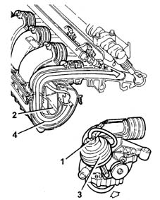
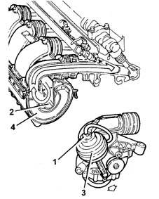
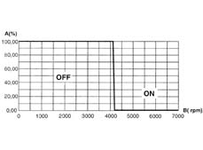
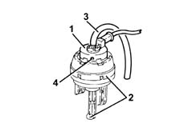

DESCRIPTION OF COMPONENTS.
- Path
- Descriptions > 10 ENGINE > 1072 inlet and exhaust manifolds > 1072D MODULAR INTAKE MANIFOLD (V.I.S.) > DESCRIPTION OF COMPONENTS.
- Kind
- system description
- Applies to
- engines: 2.4 20V; all production periods
- Interactive page
- https://sloeber94.github.io/elrnDB-lThss/en/#/609636
Applies to: engines: 2.4 20V; all production periods
MODULAR INTAKE MANIFOLD
Specifications
Type
An intake manifold of modular length controlled by the injection control unit. Allows volumetric efficiency to be increased and thus:
- optimise torque delivery at low/medium speeds;
- increase power at high speeds.
Composition.
Structure.
The modular intake manifold consists of:
- two plastic halves
- a vacuum accumulator formed inside the manifold
- a modular intake device control actuator with built-in two-way control solenoid.
Operation.
The injection control unit controls a two-way solenoid (1) that puts vacuum accumulator (2) into communication with pneumatic actuator (3), which allows swinging duct (4) to move via two linkages.
When the swinging duct rotates, the ducts can take up the following configurations:
long ducts, torque with speed up to 470 rpm.

short ducts for power greater than 4700 rpm.

modular manifold activation strategy.

- A - Throttle position.
- B - Engine rpm.
MODULAR INTAKE MANIFOLD SOLENOID.
Specifications.
Type.
A two-way solenoid built into the pneumatic actuator controlling the modular intake manifold. Controlled by the injection control unit.
Its function is to allow the vacuum present in the vacuum tank (inside the intake chamber) to act on the pneumatic actuator controlling the swinging duct.

- 1 - Solenoid
- 2 - Actuator.
- 3 - Vacuum intake pipe.
- 4 - Atmospheric air intake.